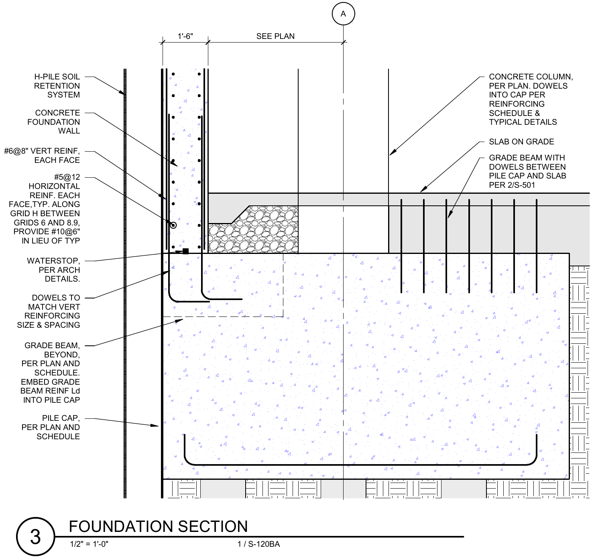
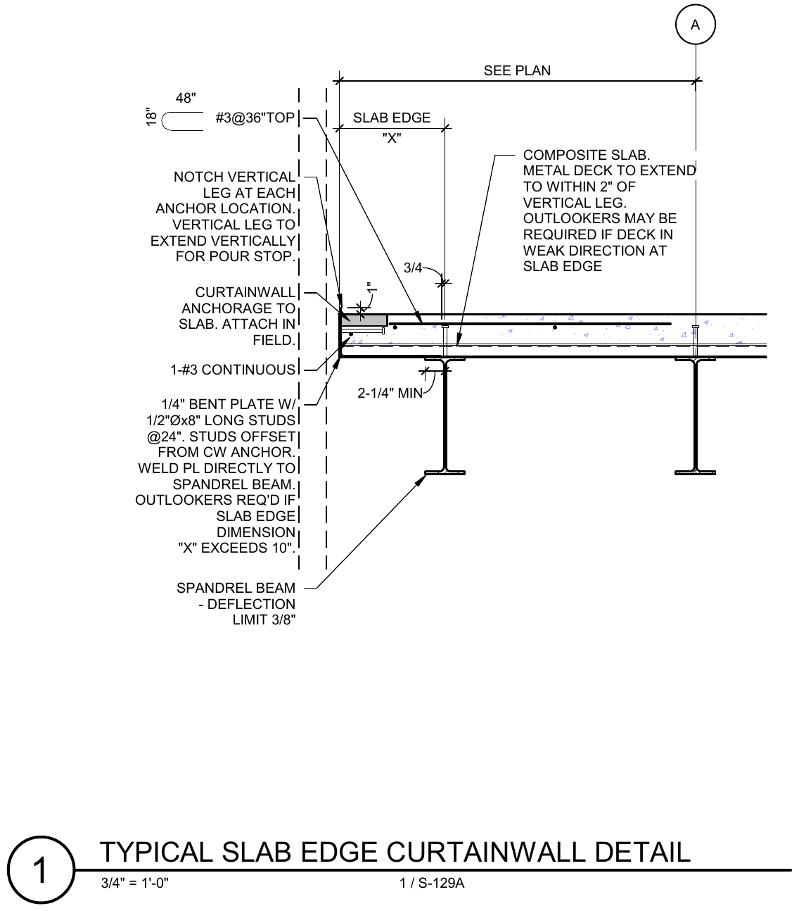
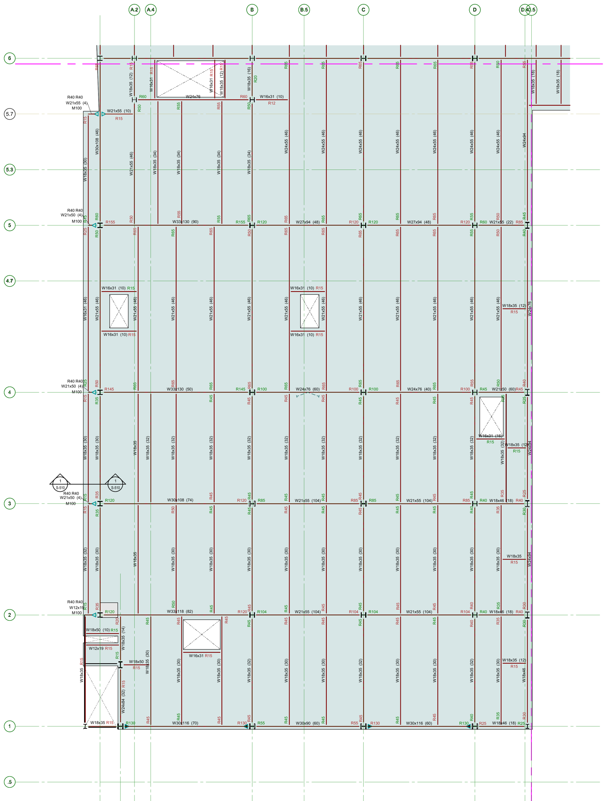

Walter P Moore
Structural engineering internship in the Washington, DC office. I modeled the structural system of a multi-story steel and concrete building in Revit and produced its drawing sheets.
- Role
- Structural engineering intern, Structures group
- Tools
- Revit
- Year
- 2025

What I did
I modeled every structural element shown on the sheets, then documented them: section hatching, callouts, dimensions and reinforcing. The set covered the full height of the building:
- Basement foundation plan with augercast piles, pile caps and grade beams
- Floor framing plans for steel and composite deck levels
- Concrete and steel column schedules and a post-tensioned beam schedule
- Foundation sections and slab-edge details, including curtain wall anchorage
The work taught me to read and produce construction documents the way a design team uses them, keeping plans, schedules and details consistent across sheets, under the mentorship of a principal in the Structures group.


